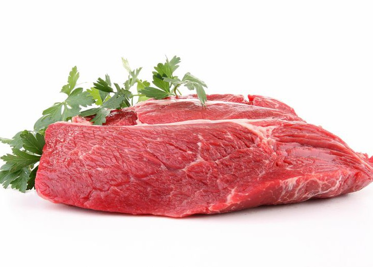
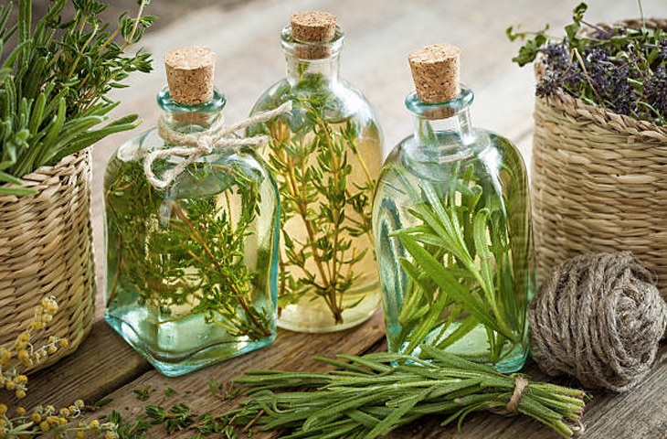
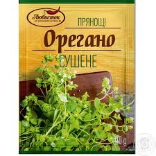
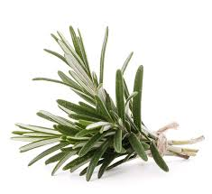
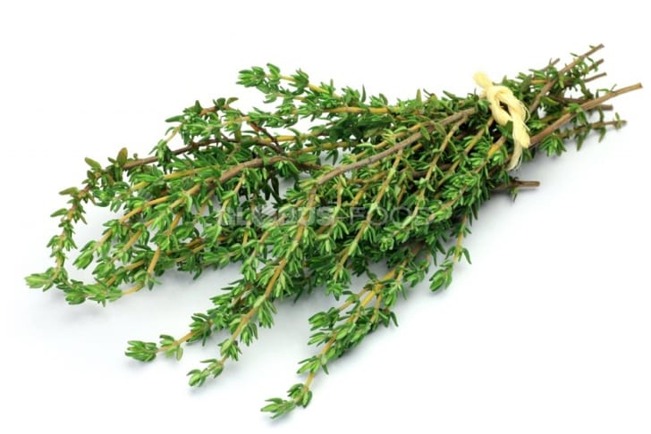

Информация о блюде
| Описание | Рецепт приготовления стейка (Т-Вone steak). Самое главное для данного блюда правильно выбрать мясо, а именно стейк на т-образной кости. |
| Каллории | 700 кКал |

2 штуки

1 по вкусу

1 по вкусу

1 по вкусу

1 по вкусу
Способ приготовления
- Приготовим бумажные полотенца и оботрем ими стейки.
- На раскаленной сковороде жарим стейк. Жарим минуты три с обеих сторон.
- До температуры сто восемьдесят градусов разогреваем духовой шкаф (верх-низ).
- Положим в огнеупорную форму сливочного масла с травами. Нарежем его кружочками.
- Теперь добавляем сюда травы: розмарина, тимьяна, орегано. С обеих сторон поперчим стейк. Минут на десять ставим в разогретый духовой шкаф.
- Далее вынимаем из духовки, и перекладываем на тарелку. Подавать со сливочным маслом и травами. Так как масло соленое, солить стейк не надо. Блюдо готово.